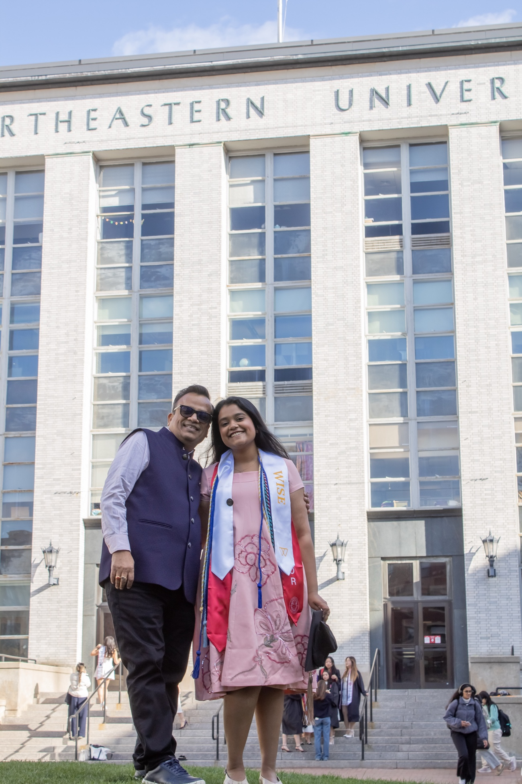
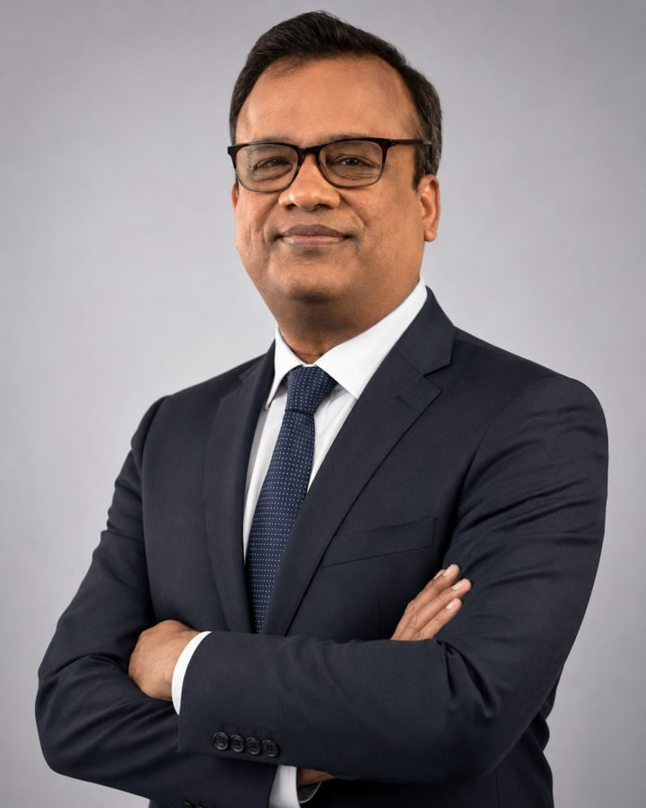

The founders
A father-daughter duo, making AI useful for Indian dhandha.
AI OS is an Indian AI consulting and training firm, headquartered in Kolkata. We help SME and MSME owners move from AI curiosity to real implementation across marketing, operations, and growth.
Twenty-five years of building businesses on one side. Native fluency in AI on the other.


Co-Founder · Business
Ajay Laddha
Ajay Laddha is the Co-Founder of AI OS and the business anchor of the firm.
He spent 25 years building businesses before AI OS. As Director of AM Mobile for 19 years, he scaled it into India's largest Nokia retail chain, then built ventures across mobile insurance and EdTech.
So when he tells owners that AI is not technology, it is intelligence for your business, he says it as someone who has managed P&Ls, teams, and operations for decades, not as a tech guy.
At AI OS, he helps MSME owners install AI as their business operating system: not a chatbot, not a demo, but a working system that supports sales, finance, and operations every day. He has run 80+ workshops across manufacturing, retail, and services, coaching owners and their teams to think with AI, not just use it.
He is a Doctoral Candidate in Generative AI at Golden Gate University and was recognised as a Rising Star in Generative AI by the Times of India.
- Rising Star in Generative AI — Times of India
- 25 years building businesses; scaled AM Mobile into India's largest Nokia retail chain
- Doctoral Candidate in Generative AI, Golden Gate University
- 80+ AI workshops delivered across manufacturing, retail, and services
- BE, Electronics & Telecommunications, University of Pune

Co-Founder · Training & Technology
Anjali Laddha
Anjali Laddha is the Co-Founder of AI OS, where she leads the technology and training side of the firm.
She runs the hands-on AI training that takes business owners from AI curiosity to real implementation. Every session is built around one rule: owners leave with things they can use Monday morning, not theory.
She works across marketing, operations, and growth with SME and MSME owners, many of them women, helping them use AI as a business advantage rather than one more thing to catch up on later.
Anjali co-founded AI OS with her father, Ajay Laddha. He brings over 25 years of experience building businesses; she grew up fluent in the technology now rewriting it. Together they cover the two things owners actually need: someone who understands business reality, and someone who can make the technology work inside it.
At 22, she has built two AI companies and trained 5,000+ people, including 2,000+ business owners. She was named Top 150 in AI by Her by the Government of India and is a graduate of Northeastern University, USA.
- Top 150, AI by Her — Government of India, India AI Summit
- Speaker, Grace Hopper Celebration
- Women Who Empower Innovator Award, Northeastern University
- Author of CANnected, a career playbook on communication, AI, and networking
- Graduate of Northeastern University, USA — International Business, Social Innovation & Entrepreneurship
- Trained 5,000+ people, including 2,000+ business owners, across India and the US
Why a duo
Business reality, and the technology to match it.
One of us has run P&Ls, teams, and shop floors for twenty-five years. The other grew up fluent in the technology now rewriting all of it. Owners need both, and rarely get them in the same room.
That is the whole idea behind AI OS: AI that earns its place in your dhandha, explained by people who understand both sides of it.